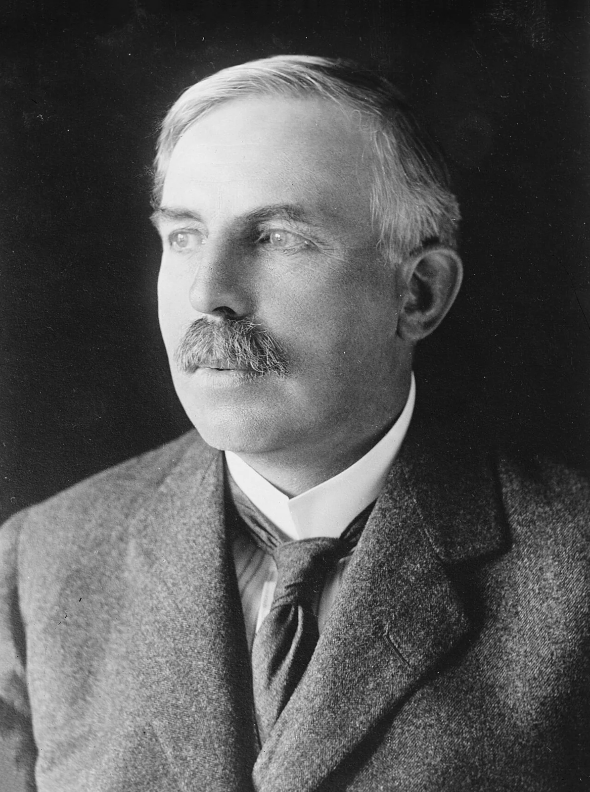
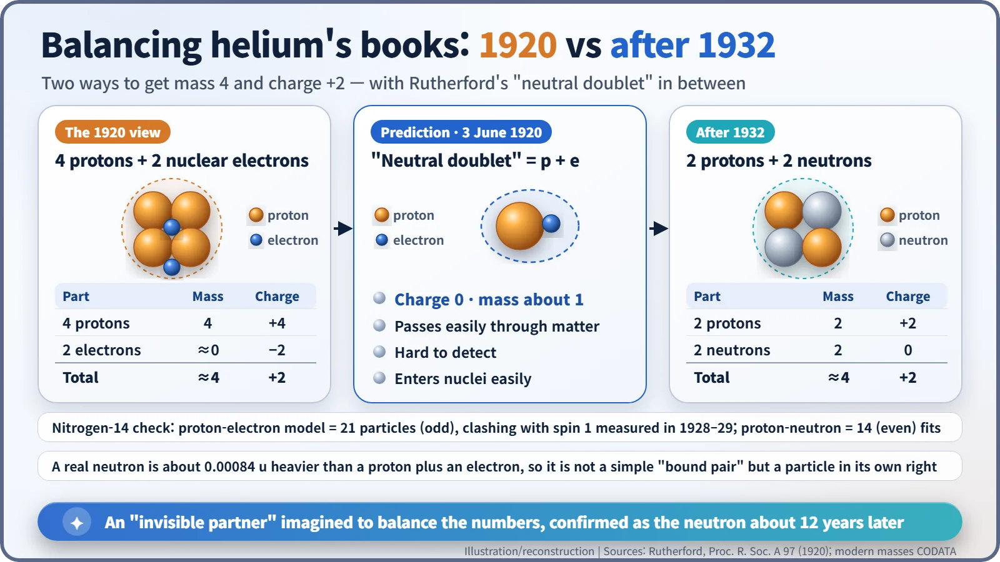
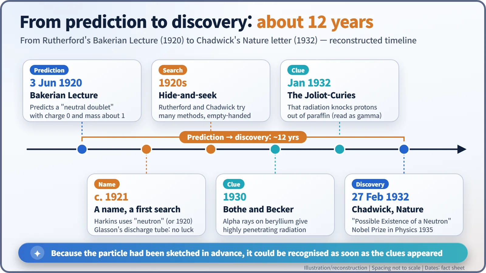

Nuclear History · 034
Found on Paper First — Rutherford Predicts the Neutron (1920)
Trying to balance the books of the helium nucleus, Rutherford imagined an invisible, uncharged partner that would one day drive every nuclear reactor.
On 3 June 1920, in the Royal Society's Bakerian Lecture, Ernest Rutherford argued that a particle with no electric charge and a mass of about 1 probably existed inside atomic nuclei. He called it a "neutral doublet" of a proton and an electron. It took about twelve years of searching before James Chadwick found the neutron in 1932, and the particle turned out to be both what Rutherford predicted and something rather different.
A planet found with a pen
On 23 September 1846, Johann Galle at the Berlin Observatory pointed his telescope at a particular spot in the sky. The French mathematician Urbain Le Verrier had worked out, purely from tiny wobbles in the orbit of Uranus, that an unseen planet ought to be there. That night Neptune was exactly where the pen had put it. The calculation had found the planet before anyone's eyes did. [6]
Seventy-four years later, something similar happened inside the atomic nucleus. On Thursday, 3 June 1920, at the Royal Society in London, Ernest Rutherford (1871–1937) stood at the lectern and argued that a particle nobody had ever seen probably had to exist. [1]

The nucleus didn't add up
Rutherford was 48 and had just become director of the Cavendish Laboratory in Cambridge. He had already shown that every atom has a tiny, heavy nucleus at its centre. The open question was what that nucleus was made of.
Think of it as balancing the books. A helium nucleus weighs about four times as much as a hydrogen nucleus, yet carries a charge of only +2. In 1920 physicists knew of just two building blocks: the hydrogen nucleus (what we now call the proton) and the electron. So there was only one way to make the numbers work: use four hydrogen nuclei to get the mass of 4, then tuck two electrons inside the nucleus to cancel two units of charge. Rutherford put it plainly in his lecture: "the helium nucleus is composed of four hydrogen nuclei and two negative electrons with a resultant charge of two." [1]
3 June 1920: the Bakerian Lecture
This was no ordinary talk. The Bakerian Lecture, funded by a bequest from Henry Baker, has been the Royal Society's premier lecture in the physical sciences since around 1775. Rutherford's title was "Nuclear Constitution of Atoms". [4]
His reasoning started as bookkeeping. If one electron could bind several hydrogen nuclei together, then perhaps it could bind two of them, giving "an atom of mass nearly 2 carrying one charge, which is to be regarded as an isotope of hydrogen." Or it could hold just one, giving "an atom of mass 1 which has zero nucleus charge." He imagined an electron combining "much more closely with the H nucleus, forming a kind of neutral doublet."
His predictions for this doublet were remarkably specific. With almost no electric field outside it, "it should be able to move freely through matter." It would be hard to spot with a spectroscope, and "it may be impossible to contain it in a sealed vessel." On the other hand, it should slip easily into atomic nuclei. In fact, he said, such particles seemed "almost necessary to explain the building up of the nuclei of heavy elements," because it was hard to see how any positively charged particle could push its way into a heavy nucleus against the fierce electrical repulsion. [1]

A name came later, then twelve years of hide-and-seek
It is often said that Rutherford named the neutron in this lecture. He did not: the word "neutron" does not appear in the text of the lecture. In the context of the nucleus, the name was used around 1921 by the American chemist William Draper Harkins (1873–1951) and others (some sources date it to 1920). [3]
In the lecture Rutherford said he intended to test whether such particles formed in an electric discharge through hydrogen. In 1921 J. L. Glasson at the Cavendish searched for them in a discharge tube and came up empty. Rutherford's colleague James Chadwick (1891–1974) kept hunting for more than a decade. A particle with no charge leaves almost no trail, so it was a game of hide-and-seek with an invisible opponent. [2] [3]
There is a nice twist, too. In the same lecture Rutherford reported that bombarding nitrogen and oxygen with alpha particles knocked out particles of "mass about 3 carrying two positive charges." Those later turned out to be ordinary alpha particles. A line of reasoning that began with a faulty measurement still ended in a sound prediction. And his "hydrogen of mass 2" did turn up: heavy hydrogen, deuterium, was discovered in the early 1930s.

The prediction held; the picture changed
In 1930 Walther Bothe and Herbert Becker in Germany reported a mysterious, highly penetrating radiation from beryllium. In January 1932 Irène Joliot-Curie and Frédéric Joliot showed that it could knock protons out of paraffin wax. Chadwick went straight to work, and on 27 February 1932 Nature published his letter "Possible Existence of a Neutron". In his full paper he called the new particle "the 'neutron' discussed by Rutherford in his Bakerian Lecture of 1920." How he pinned it down is a story of its own. [2]
Today's neutron, though, is not Rutherford's proton-plus-electron pair. It is a particle in its own right, made of three quarks, and it is about 0.00084 u (atomic mass units) heavier than a proton and an electron combined. If it were simply a tightly bound pair, it should weigh less, not more. The idea of electrons inside the nucleus was cracking anyway: measurements of the nitrogen-14 nucleus's spin in 1928–1929, among other problems, did not fit it, and the proton-neutron model took over. Even Chadwick briefly considered the neutron as a proton and electron forming "a small dipole", so the modern picture took a while to settle. [2] [3] [5]
Still, the heart of the prediction was right: no charge, a mass of about 1, easy passage through matter and easy entry into nuclei. Those very properties let the neutron trigger nuclear fission a few years later and drive the chain reaction in every nuclear reactor. Like Neptune, the star of the reactor was found on paper first.
| Property | Rutherford's neutral doublet (1920) | The neutron as understood today |
|---|---|---|
| Electric charge | Zero | Zero |
| Mass | About 1 (hydrogen = 1) | 1.00866 u, slightly more than a proton (1.00728 u) |
| Make-up | A proton with an electron bound very closely | Three quarks; not a proton-electron pair |
| Behaviour | Moves freely through matter, enters nuclei easily | Confirmed; the key to fission and reactors |